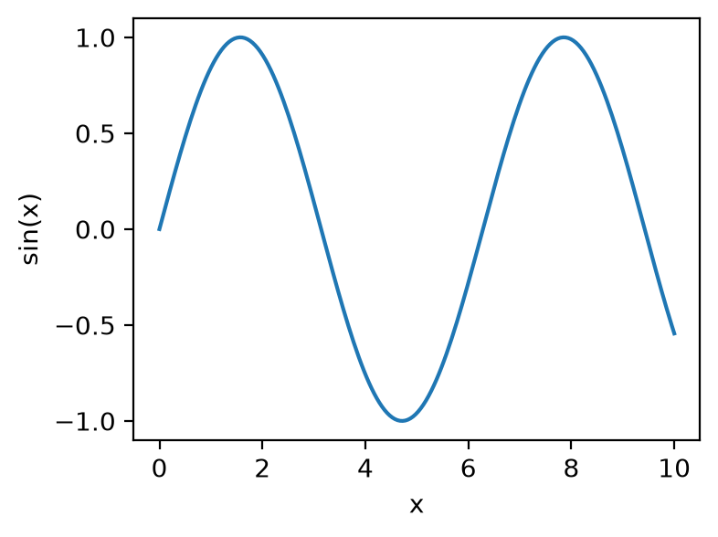
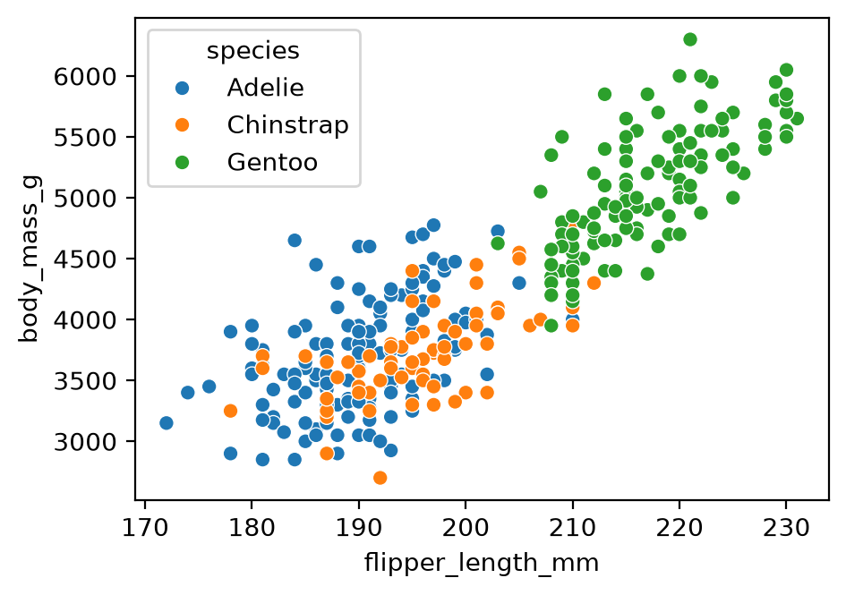
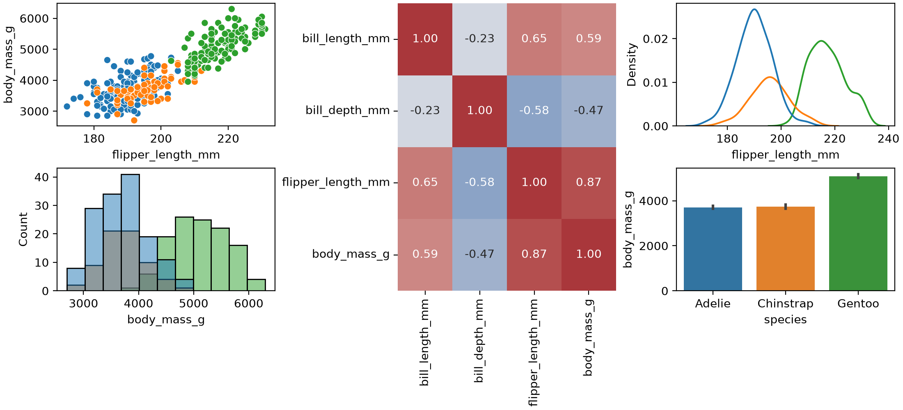
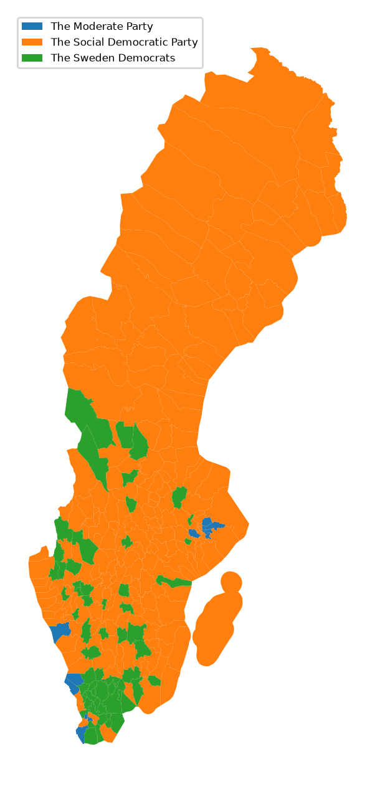

Introduction
A figure communicates a message, not just the data. A good figure is accurate first (never mislead or distort), then clear and pleasing to look at.
This walkthrough covers the Python plotting stack for publication and poster figures:
- Matplotlib is the base layer. Seaborn and pandas draw through it.
- Seaborn and pandas wrap Matplotlib with shorter syntax for common plots.
- Bokeh and Plotly are separate libraries for interactive plots.
Install the libraries with pixi add numpy matplotlib seaborn pandas, or your package manager of choice.
The advice on figure design comes from Claus O. Wilke’s free online book, Fundamentals of Data Visualization. The book organises chapters by what you want to convey (amounts, distributions, proportions, associations, time series) rather than by data type.
Matplotlib: figure, axes and artists
Matplotlib has two interfaces. The implicit one, common in online examples, draws on a hidden “current” figure:
import matplotlib.pyplot as plt
import numpy as np
x = np.linspace(0, 10, 200)
plt.plot(x, np.sin(x))Use the explicit interface instead. It gives you named objects to change later. Matplotlib has three terms for them:
- Figure (
fig): the whole page. You save or print this. - Axes (
ax): one chart area, with its own x and y limits, ticks and labels. A figure holds one or more. - Artists: everything visible: lines, dots, text, the box around the plot, tick marks.
fig, ax = plt.subplots() # a figure with one axes
ax.plot(x, np.sin(x)) # a line plot of a sine wave, drawn on that axes
fig.savefig("sine.png", dpi=200, bbox_inches="tight")In a script, add plt.show() to open a window. Jupyter shows figures automatically.

plt.subplots() with no arguments creates a 1×1 grid. plt.subplots(2, 5) creates two rows of five axes and returns them as an array (axs[0, 1] is row 0, column 1).
Everything you see is an artist you can restyle after plotting. Change tick labels and fonts on the axes:
ax.set_xticks([0, np.pi, 2 * np.pi, 3 * np.pi])
ax.set_xticklabels(["0", "π", "2π", "3π"], fontsize=14, rotation=30, color="navy")
ax.set_yticks([-1, 0, 1], labels=["min", "0", "max"], fontsize=12)
ax.tick_params(axis="y", length=8, width=2) # the tick marks themselves
ax.minorticks_on()To layer a second plot, a trend line or text on a plot, call another method on the same axes:
categories, values, trend = ["a", "b", "c"], [1, 2, 3], [1.2, 1.9, 3.1]
fig, ax = plt.subplots()
ax.bar(categories, values, alpha=0.5) # alpha = transparency, so layers show through
ax.plot(categories, trend) # trend line over the bars
ax.text("c", 3.2, "outlier", fontsize=10)Seaborn: the same figure in fewer lines
Seaborn draws on Matplotlib axes and assumes sensible defaults for data frames (pandas tables). Compare a scatter plot of penguin flipper length against body mass, coloured by species:
import seaborn as sns
penguins = sns.load_dataset("penguins") # downloads the example data set on first usefig, ax = plt.subplots()
sns.scatterplot(data=penguins, x="flipper_length_mm", y="body_mass_g",
hue="species", ax=ax)fig, ax = plt.subplots()
for species, group in penguins.groupby("species"):
ax.scatter(group["flipper_length_mm"], group["body_mass_g"], label=species)
ax.set_xlabel("Flipper length (mm)")
ax.set_ylabel("Body mass (g)")
ax.legend()
Seaborn also provides plots that are laborious in Matplotlib alone, such as sns.clustermap (a heat map with clustering trees, called dendrograms, on the rows and columns).
pandas: quick plots from a data frame
A data frame has a .plot accessor that wraps Matplotlib. Use it to browse chart types quickly:
df = penguins.select_dtypes("number") # the numeric columns of the penguin table
df.plot() # one line per column, with a legend
df.plot.box() # one box plot per column
df.plot.hexbin(x="flipper_length_mm", y="body_mass_g", gridsize=25) # colour = points per hexagonThe pandas visualisation guide lists every plot kind.
Composite figures with GridSpec
Publication figures often mix plot types in an uneven layout. GridSpec divides the figure into a grid, and each axes can span several cells. Create the axes first, then pass each one to a Seaborn or Matplotlib function (this reuses plt, sns and penguins from the Seaborn section):
fig = plt.figure(figsize=(11, 5), layout="constrained")
gs = fig.add_gridspec(2, 3)
ax_scatter = fig.add_subplot(gs[0, 0])
ax_hist = fig.add_subplot(gs[1, 0])
ax_heat = fig.add_subplot(gs[:, 1]) # all rows, column 1: spans both rows
ax_density = fig.add_subplot(gs[0, 2])
ax_bars = fig.add_subplot(gs[1, 2])
sns.scatterplot(data=penguins, x="flipper_length_mm", y="body_mass_g",
hue="species", ax=ax_scatter, legend=False)
sns.histplot(data=penguins, x="body_mass_g", hue="species",
ax=ax_hist, legend=False)
sns.heatmap(penguins.select_dtypes("number").corr(), annot=True, fmt=".2f",
cmap="vlag", center=0, ax=ax_heat, cbar=False)
sns.kdeplot(data=penguins, x="flipper_length_mm", hue="species",
ax=ax_density, legend=False)
sns.barplot(data=penguins, x="species", y="body_mass_g",
hue="species", legend=False, ax=ax_bars)
fig.savefig("figure.svg")
SVG and PDF are vector formats (shapes, not pixels), so you can edit the figure by hand in Inkscape or Illustrator.
Maps with geopandas
geopandas extends pandas with geographic data types. In the demo, I plotted which party won each Swedish municipality in an election. Once the data frame has one row per municipality with its boundary shape (the geometry column) and a result, the plotting itself is a single .plot(column=..., legend=True) call.
This version uses two open data sets: municipality boundaries from Opendatasoft, and 2022 Riksdag election results from Statistics Sweden’s open API. It needs pixi add geopandas requests and an internet connection.
import io
import geopandas as gpd
import matplotlib.pyplot as plt
import pandas as pd
import requests
# Boundaries: 290 simplified municipality polygons
geo = gpd.read_file(
"https://public.opendatasoft.com/api/explore/v2.1/catalog/datasets/georef-sweden-kommun/exports/geojson"
)
geo["id"] = geo["kom_code"].str[0] # codes arrive as one-item lists, e.g. ["0126"]
# Vote share per party and municipality, 2022, as CSV
url = ("https://api.scb.se/OV0104/v1/doris/en/ssd/START/ME/ME0104/ME0104C/ME0104T3")
query = {
"query": [
{"code": "Region", "selection": {"filter": "item", "values": list(geo["id"])}},
{"code": "Partimm", "selection": {"filter": "item",
"values": ["M", "C", "FP", "KD", "MP", "S", "V", "SD"]}},
{"code": "ContentsCode", "selection": {"filter": "item", "values": ["ME0104B7"]}},
{"code": "Tid", "selection": {"filter": "item", "values": ["2022"]}},
],
"response": {"format": "csv"},
}
resp = requests.post(url, json=query, timeout=60)
resp.raise_for_status()
votes = pd.read_csv(io.StringIO(resp.text))
votes.columns = ["region", "party", "share"]
votes["id"] = votes["region"].str[:4] # "0114 Upplands Väsby" -> "0114"
# The party with the highest vote share in each municipality
winner = votes.loc[votes.groupby("id")["share"].idxmax(), ["id", "party"]]
fig, ax = plt.subplots(figsize=(4, 8))
geo.merge(winner, on="id").plot(column="party", legend=True, ax=ax,
legend_kwds={"loc": "upper left", "fontsize": 6})
ax.set_axis_off()
Interactive and other libraries
- Bokeh combines Python and JavaScript for interactive plots in a browser. It suits local exploration.
- Plotly does not build on Matplotlib but covers similar ground, with an optional commercial platform for apps.
- plotnine brings the grammar of graphics, with R’s ggplot2 syntax, to Python.
- Altair describes a plot declaratively: you state what to plot, not how to draw it.
Choose by output: paper, poster or interactive.
Tips from Fundamentals of Data Visualization
Each tip links to the relevant chapter of the book.
Check the size at the final scale. Plotting software sets axis labels and tick labels too small by default. Create the figure at that size (plt.subplots(figsize=(4, 3)), in inches) or view it from a distance to check it is still legible (Use larger axis labels). Set the default font size for every later figure once:
plt.rcParams["font.size"] = 12Use colour with a purpose. Qualitative colour works best for three to five categories. Beyond about eight, label items directly. Avoid rainbow scales for continuous data. About 8% of men and 0.5% of women have a colour-vision deficiency, and red–green contrasts are the most affected. The book recommends the Okabe–Ito palette for categories (Common pitfalls of color use):
okabe_ito = ["#E69F00", "#56B4E9", "#009E73", "#F0E442",
"#0072B2", "#D55E00", "#CC79A7", "#000000"]
sns.set_palette(okabe_ito)Don’t go 3D. The third dimension carries no data, and projecting it onto a flat page distorts values: front slices look larger, bars look shorter. Encode extra variables with colour, size or shape, or use small multiples (Don’t go 3D).
Write titles as claims and label units. A title states the finding (“Gentoo penguins are heavier”), not “This figure shows…”. Axis titles name the variable and its unit (Titles, captions, and tables).
Prefer solid shapes to outlines. Filled bars, shaded density curves and solid points read more clearly than outlines and open symbols (Avoid line drawings).
Balance density. Do not fill every gap, and do not leave large empty areas (Balance the data and the context).
Key takeaways
- A figure is the whole page. An axes is one chart area. Change tick labels and fonts on the axes.
- Use
fig, ax = plt.subplots()rather thanplt.plot(). It gives you named objects to restyle later. - Seaborn and pandas draw on Matplotlib axes, so you can mix them in one figure and restyle the result with Matplotlib.
- Check a figure at its final printed size, about three to five inches wide.
- Avoid 3D, avoid rainbow scales, and choose colours that work for colour-blind readers.
Data sources and licences
- Palmer penguins (
sns.load_dataset("penguins")): Gorman KB, Williams TD, Fraser WR (2014), collected at Palmer Station, Antarctica LTER, a member of the US Long Term Ecological Research Network. Released under CC0 via the palmerpenguins package. Cite the package as: Horst AM, Hill AP, Gorman KB (2020). palmerpenguins: Palmer Archipelago (Antarctica) penguin data. doi:10.5281/zenodo.3960218. To publish the data itself, the palmerpenguins authors ask you to contact Dr Kristen Gorman. Seaborn downloads a copy from its seaborn-data repository. - Election results: data from Statistics Sweden, table ME0104T3, accessed through the open data API. Released under CC0, so attribution is optional. The map above is derived from the table.
- Municipality boundaries: Opendatasoft’s Kommuner - Sweden data set, derived from GSD-Sverigekartor by Lantmäteriet (the Swedish mapping authority), with simplified geometries. The data set page states no licence. Lantmäteriet publishes its open geodata under CC0, but its page does not name this product, so check the terms before redistributing the file or publishing a figure made from it. The example downloads the file at run time rather than copying it.
Resources
- Fundamentals of Data Visualization, Claus O. Wilke (free online)
- Matplotlib documentation
- Seaborn documentation
- pandas visualisation guide
- geopandas
- plotnine